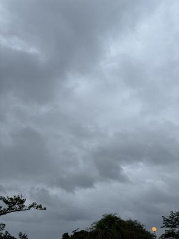
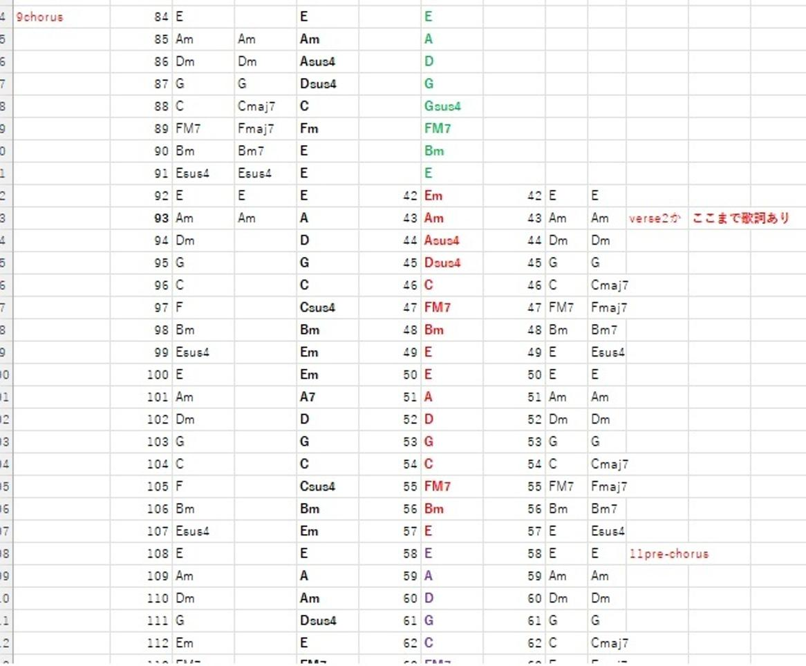
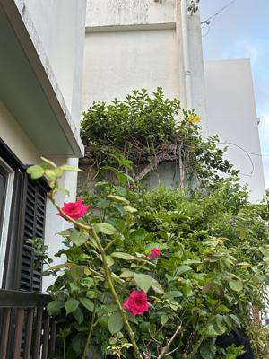

うるがいの話 ある日
最新: https【うるがいの話 ある日】とは 一日だけのプログです
『うるがいの話』の最新一日だけのプログで、通信料が少なく経済的だ。カニの画像をクリックすると全ての日付が載る『うるがいの話』サイトを表示します
|
|
【うるがいの話】 うるがい(ｳﾙｶﾞｲ urugai)とは、『もずくがに』の名前でとても大きくなります。 |
|---|---|
|
|
【カミマヤーの話】 猫のことを方言でマヤーといいます。カミマヤー（kamimayaa）とは、神の猫のことです。 |
|
【たながぁの音楽】 たながぁ（ﾀﾅｶﾞｰ tanagaa）とは手長えびのことで、何種類かあり大きいのは車 エビぐらいになります。 |

|
【ぶながぁの話】 ぶながぁ(ﾌﾞﾅｶﾞｰ bunagaa)とは、赤い髪の毛、赤い身体、そして身長は１ｍ２０ｃｍ ぐらい、川の蟹を食べているの目撃された。場所は沖縄県国頭郡大宜味村のと ある村僕の隣近所に住んでいる爺さんから、聞いた話です。 |
|
|
【ギーマの話】 ギーマ(giima)とは、山原の里山に咲くスズランに似た、 花を付けます。実は食べられます、 気が付くと口の周りが紫になっています。 |
2026年09月07日 (月）https
16:23

ニフティのホームページは、去年の１０月にセキュリティサイト
に変わりました。で、つきましてはコレをやってねと言われてま
した。
HTTPSとは
HTTPSは、Web通信を暗号化して安全にするためのHTTPの拡張版
の通信方式です。主にTLSという仕組みを使い、盗聴や改ざんを
防ぎます。
【重要】HTTPS対応のご案内（2025年10月1日～順次）
●具体的な修正作業●
ホームページのHTMLファイルやCSSファイルなどを開き、
【http://】 で始まる
ご自身のサイト内の記述を相対パスなどで書き換えてください。
対応しました。
ユーチューブ動画の説明欄（概要欄）で利用してる無料のサイト
のリンクが、数か月前不安定なのですよ、最悪な場合繋がらない
。タダだからね、エーイこの際せっかくニフティが、セキュリテ
ィサイトになったのでニフティのサイトに設定した。さすが早い
、お金払っているからね。
工工四（４頁)
なお、動画を作成する上で、ネットの楽譜データを分析するのに
wavetone言うコードを分析するツールを使ってギターコードを複
数分析しました。成功です！、徐々にＤＴＭのテクニックが向上
しています。

作成したユーチューブ動画はこれです
恋のサバイバル ４分５６秒
https://youtu.be/u7BfW-mkvYM
夏の薔薇の花は小ぶりです、ひと月前に選定したアリアケカズラ
は、黄色い花を咲かせています。
